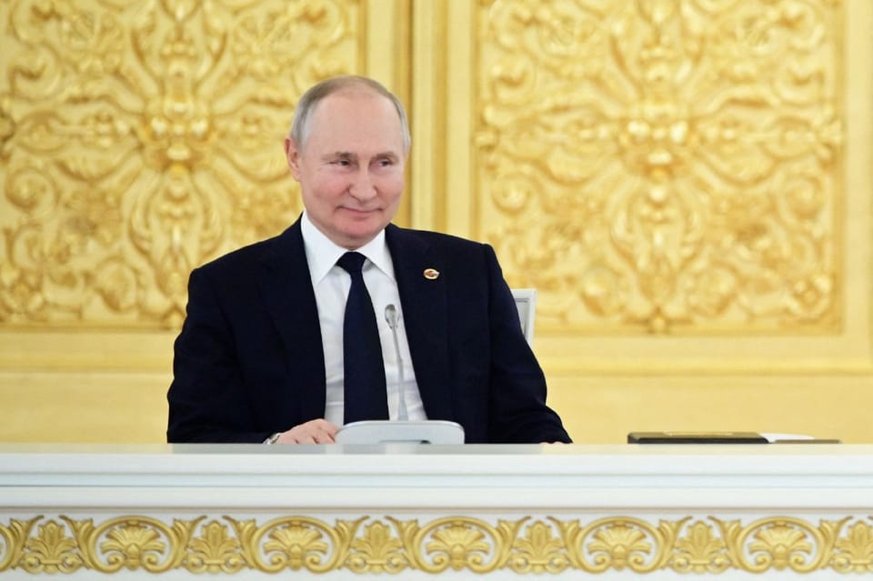

世界苦茶08月09日新闻 | 30条 | 特朗普可能出卖乌克兰用领土换停火

特朗普可能出卖乌克兰用领土换停火 | 伊朗总统9月将访华 | 甘肃洪灾10死33失联 | 太平洋岛国论坛排除中美台参加 | 瑞典首相承认chatGPT治国
新Substack文章，每週2-3更，歡迎關注
每日三條新聞解析
苦茶数据
美元兑人民币：7.18（昨日7.18，前日7.18）
美元兑日元：147.82（昨日147.32，前日147.30）
上证指数：休市（昨日3635，前日3637）
标普500指数：休市（昨日6389，前日6340）
比特币：116495（昨日116588，前日114263）
布伦特原油：66.59（昨日66.15，前日67.37）
中国新闻
• 中日韩农业部长会重启 ：时隔七年，中日韩农业部长会议恢复举行。据日本共同社报道，日本农工业部长小泉进次郎星期五在内阁会议后的记者会上宣布，他将出席下星期一在韩国举行的日中韩农业部长会议。这是时隔七年，日中韩农工业部长会议恢复召开。小泉进次郎将于星期六至下星期一访问韩国。
• 甘肃山洪致10死33失联 ：中国甘肃省会兰州市榆中县因强降雨引发山洪灾害，已造成10人死亡、33人失联。中国国家主席习近平作出指示，指这场山洪灾害造成重大人员伤亡，当务之急要千方百计搜救失联人员。据央视新闻报道，甘肃兰州市榆中县等地星期四以来遭遇连续强降雨，引发山洪灾害。截至星期五下午3时30分，已造成10人死亡、33人失联。习近平在灾害发生后作出指示，指这场山洪灾害造成重大人员伤亡，当务之急要千方百计搜救失联人员，转移安置受威胁群众，最大限度减少人员伤亡，尽快恢复通讯和交通。
• 甘肃推进新一轮找矿 ：矿产资源丰富的中国甘肃省推进新一轮找矿突破战略行动，甘肃省长称要找大矿、找好矿、找急需的矿，盯紧关键矿种，在重点勘查区和重要矿山深部“攻深找盲”，促进战略性矿产增储上产。综合《甘肃日报》和《北京青年报》报道，甘肃省新一轮找矿突破战略行动推进会议星期三在省会兰州召开。甘肃省长任振鹤出在会上称，要发挥能源资源富集优势，统筹国家所需、甘肃所能，积极服务融入以国内大循环为主体的新发展格局和全国统一大市场，为保障国家能源安全作出更大贡献。
• 河南“90后”法官被批捕 ：中国河南省一名“90后”基层法官为涉黑母亲辩护引起舆论关注后，因涉嫌洗钱犯罪被警方刑拘，随后又因涉嫌挪用资金犯罪被批捕。中国知名法律学者何兵认为，洗钱罪正在被滥用，中国社会各界要高度警觉。综合《新京报》和财新网报道，今年3月，河南省南阳市镇平县法院“90后”法官毕祺祺在网上发布《我能否为母辩护，请法院给个说法》一文，引起社会关注。他的母亲冀廷梅是一起组织、领导、参加黑社会性质组织罪案件的被告人之一。3月31日，南阳市淅川县法院同意毕祺祺作为冀廷梅的辩护人行使阅卷权。不过这起法官为涉黑案母亲辩护事件却在7月出现意外转折。7月10日，毕祺祺被南阳市南召县公安局刑事拘留，警方指他涉嫌洗钱罪。
• 胖东来为退伍及服刑者留岗 ：中国知名商超品牌胖东来宣布，新门店的部分岗位将留给退伍边防军人和有犯罪史服刑人员。综合极目新闻和海报新闻等媒体报道，胖东来创始人于东来星期五在社交平台发布消息称，新乡市第三家胖东来门店“三胖”进入招工阶段，估计名额1000人左右，规划20%的岗位给退伍边防军人，2%的岗位给有犯罪史的服刑人员。于东来写道，让曾经走过弯路的群体得到尊重和关爱、变成创造和享受美好的主人，坚定共同走向美好。
• 伊朗总统九月将访华 ：伊朗总统佩泽希齐扬将在9月访华，并出席上海合作组织峰会。据伊朗媒体迈赫尔通讯社报道，伊朗外交部长阿拉格齐星期四宣布上述消息。阿拉格齐4月23日到访北京时曾说，佩泽希齐扬会在不久后的将来访问中国。
• 多地查出财政补贴乱象 ：近期多省份披露，部分商家通过违规涨价等方式增加财政补贴，还存在骗取补贴、补贴资金兑付慢等问题。截至8月6日，有10个省公布了2024年度省级财政预算执行情况的审计报告。北京披露，部分商品涨价增加财政补贴，五家企业未按规定向市商务局申请价格调整，采取变更商品编码、搭车上传套装商品或服务的方式上涨备案价格，销售1.35万件商品，增加财政补贴277.11万元。北京非实名买家通过借用、盗用个人购买资质等方式，批量购买总价2.47亿元的电脑等商品，涉嫌骗补；海南抽查的三家企业 413款商品存在 “先涨后补”、捆绑销售等套补行为，涉交易金额707万元。
亚太印太新闻
• 台湾人口连降19个月 ：官方数据显示，台湾人口连续19个月下滑。根据台湾内政部户政司全球资讯网提供的数据，截至今年7月的台湾人口数量总计2333万多人，其中男性约1148万，女性约1185万。台湾人口总数在2023年12月升至2342万人后便逐月下滑。
• 日企经理赴台应对窃密案 ：知情人士称，针对台积电机密窃取案，日企东京威力科创的经理抵达台湾处理善后事宜。彭博社引述不愿具名的知情人士报道，在星期三上午举行的公司团队会议上，东京威力科创的员工被告知不要谈论此事。东京威力科创星期四公布，在台湾子公司工作的一名涉案者已被解雇。
• 美参院军委会主席或访台 ：美国参议院军委会主席据传有可能到访台湾，若成行，这将是担任该职务的议员自2016年来首次访台。中国大陆国防部对此表示，坚决反对美台任何形式的官方往来。中国大陆国防部发言人蒋斌星期五针对上述消息说，世界上只有一个中国，台湾是中国领土不可分割的一部分。蒋斌强调，北京一贯坚决反对美台开展任何形式的官方往来；并要求美方恪守一个中国原则和中美三个联合公报规定，切实履行不支持“台独”的承诺，停止与台湾开展任何形式的官方往来和军事联系，停止纵容支持“台独”分裂势力。
• 朝鲜强调合法太空利用权 ：朝中社星期五在《宇宙开发法》修改三周年之际，刊登最高学府金日成综合大学法学院院长张成哲的专访文章，强调合法利用太空的权利。张成哲在专访中说，将培养更多太空法领域的人才，彻底拥护朝鲜合法的太空利用权利。他说，朝鲜2022年8月7日在第14届最高人民会议常任委员会第21次全体会议上通过《宇宙开发法》修正案，为加快发展太空产业奠定法律基础。张成哲说，朝鲜在根据国际、国内公认的法律调整太空开发及利用的同时，致力于研究和学习太空法，以维护建设太空强国所需的合法权利。太空法讲座重点研究在朝鲜太空开发利用中所坚守的原则和太空主权方面存在的实践性问题。
• 缅甸签300万美元游说合同 ：一家华盛顿游说公司与缅甸签署一项一年价值300万美元的协议，旨在帮助这个长期由军方统治的国家与美国重建关系。路透社报道，根据美国《外国代理人登记法》提交的文件，美国DCI集团7月31日与缅甸通讯和信息部签署这项协议。签约当天，缅甸军方解除长达四年多的全国紧急状态，为计划于今年年底举行大选铺路。文件称，DCI集团将为缅甸提供公共事务服务，“旨在重建缅甸联邦共和国与美国之间的关系，重点关注贸易、自然资源和人道主义救援”。
科技新闻
• 瑞典首相承认用ChatGPT治国 ：瑞典首相乌尔夫·克里斯特松近日表示他会借助ChatGPT辅助政府治理工作，此言一出立即在北欧国家引发舆论风暴。在接受一家北欧媒体采访时，克里斯特松表示，他有时会向ChatGPT征求 “第二意见”，以参考治理策略。他声称：“我自己经常用 ChatGPT，哪怕只是为了听个不同的意见，别人是怎么做的？我们是否该反其道而行之？我会问类似的问题。”此番言论不出意料地招致了大量批评。批评者指出，选民投票选出的领袖是克里斯特松，而不是ChatGPT。瑞典多位技术专家也公开质疑官员依赖AI的风险，一旦政治决策基于错误信息，后果将难以估量。
财经新闻
• 马来西亚明年经济温和增长 ：马来西亚财政部指出，随着全球贸易不确定性加剧及外部需求疲软，预计马来西亚经济将在2026年保持温和增长。财政部星期五在2026年财政预算案前瞻声明中指出，经济增长将由具韧性的内需所支撑，尤其是私人投资、稳定就业，以及提升收入措施，如目标式现金转移和薪金增长。通过“2026年马来西亚旅游年”推动旅游业，亦将对服务业增长做出显著贡献。
• 台美贸易顺差创纪录 ：得益于全球人工智能热潮，台湾科技产品需求增长，促成台湾对美国贸易顺差在今年首七个月就打破了年度纪录。综合彭博社报道和台湾财政部星期五披露的数据，台湾7月份输美出口额达186.5亿美元，同比暴增63%。台美今年首七个月贸易顺差额接近700亿元，已超出2024年创下的年度纪录。数据显示，台湾7月份整体出口额达566.8亿元，同比增长42%，是15年来最大增幅，也远超出彭博社调查分析师的预期。
• 软银二季度扭亏股价飙升 ：得益于对英伟达和初创公司的投资收益，软银集团第二季度扭亏为盈，带动股价飙升6.3%，创下四个月来最大涨幅，并有望创下上市以来新高。软银重金加码投资人工智能巨头英伟达及台积电，并从中获得相当可观的收益。3月底，它将英伟达持仓增至30亿美元以上，这只股票4月至6月间涨幅达46%。截至6月底的第一财季，软银净利达4218亿日元，远超市场预期。旗下愿景基金取得季度盈利4514亿日元，主要来自投资科技股的回报，包括如韩国电商公司酷澎、德国二手车交易平台Auto1、美国仓储自动化公司Symbotic、印度外卖平台Swiggy等。
• 台积电7月营收增长26% ：台湾积体电路制造公司7月份营收实现26%增长。据彭博社报道，这家为英伟达和超威半导体等人工智能（AI）硬件生产商供应晶片的台湾企业星期五公布了7月份业绩。数据显示，公司上个月营收达3232亿新台币符合分析师所预计的第三季度25%增长。尽管新台币兑美元汇率持续上涨，台积电仍取得强劲增长，1月至7月营收同比增长了38%。
• 美将下调日本汽车税 ：日本首席贸易谈判代表赤泽亮正说，美国确认将修改一项总统行政令，取消对日本商品叠加的普通关税，并承诺下调日本的汽车税。综合路透社和彭博社报道，赤泽亮正星期四重新回到华盛顿，与美国商务部长卢特尼克及财政部长贝森特会晤，要求他们确保上月商定对日本进口商品征收15%的关税，不会叠加到牛肉等需要缴纳更高关税的商品上。赤泽亮正说，在有口头协议的情况下仍对日本征收叠加关税，是一个“令人遗憾”的疏忽。
• 中国乘用车销量增速放缓 ：中国上月的乘用车销量增长放缓，原因是在中国政府采取遏制全球最大汽车市场价格战的举措之后，需求开始降温。中国乘联分会周五公布的数据显示，七月的乘用车零售销量同比增长6.3%，至 182.6万辆，增速低于六月录得的18%。与前一个月相比，七月乘用车销量下降 12.4%。乘联分会称，上月的新能源汽车零售销量同比增长12%，至98.7万辆。数据显示，1-7月，中国共销售645.5万辆新能源汽车，同比增长 29.5%。新能源汽车包括纯电动汽车以及插电式混合动力汽车。美国电动汽车巨头特斯拉七月份销量为67886辆，同比下降8.4%，环比下降5.2%。
俄乌战争
• 特朗普在与普京举行会晤前表示，和平谈判将包括“部分领土交换”： 美国总统唐纳德·特朗普于8月8日告诉记者，莫斯科和基辅之间可能达成的和平协议可能包括“部分领土交换”，特朗普正准备下周与俄罗斯总统弗拉基米尔·普京举行峰会。“嗯，你看到的是已经争夺了三年半的领土……所以我们正在考虑这个问题，但我们实际上希望收回一些，”特朗普在与亚美尼亚和阿塞拜疆领导人共同出席的新闻发布会上说道。“一些领土交换，这很复杂。”“我们会收回一些领土。我们会交换一些领土。为了双方的利益，我们会进行一些领土交换，”特朗普补充道。
• 据《华尔街日报》报道，普京在与维特科夫会晤时提出停战，以换取乌克兰东部地区： 据《华尔街日报》8月8日援引欧洲和乌克兰官员的话报道，俄罗斯总统弗拉基米尔·普京在与美国特使史蒂夫·维特科夫会晤时提出了一项全面的乌克兰停火方案，提议以停火换取乌克兰东部地区。尽管美国总统唐纳德·特朗普声称维特科夫与普京的会谈并未在和平谈判中取得突破，但这位美国总统于8月8日宣布，他将于8月15日在阿拉斯加与普京举行首次面对面会晤。据《华尔街日报》报道，听取了与维特科夫通话简报的欧洲官员透露，普京告诉维特科夫，如果基辅从顿涅茨克州撤军，俄罗斯将同意全面停火，这将使莫斯科完全控制顿涅茨克州、卢甘斯克州以及克里米亚。据报道，听取了该提议简报的欧洲官员对该计划表示了严重保留，他们担心普京可能会将谈判作为逃避美国总统唐纳德·特朗普提出的惩罚性二级制裁的手段。 （翻评：如果是这样的条件，为什么要停火？这不就是把乌克兰卖了么？如果这个条件可以换和平协议，换乌克兰加入北约还可能可以谈，如果换停火？！这不是有病么？）
• 习近平普京通话谈乌危机 ：中国国家主席习近平与俄罗斯总统普京通话时表示，中方乐见俄美保持接触，推动政治解决乌克兰危机。据中国央视新闻报道，习近平星期五应约同普京通电话。中方新闻稿引述普京称，普京介绍了俄方对乌克兰危机当前形势的看法和俄美最近接触沟通的情况，表示俄方高度赞赏中方为政治解决危机发挥的建设性作用。
• 俄罗斯预算赤字达到610亿美元，已超出年度目标30%： 俄罗斯财政部8月7日报告称，截至7月底，俄罗斯联邦预算赤字已大幅上升至4.9万亿卢布。政府最初计划2025年的赤字为3.8万亿卢布。7月份的数据已超出政府全年目标30%以上。克里姆林宫将国防开支提高到冷战以来的最高水平，同时许多俄罗斯官员警告经济衰退的可能性。仅上个月，赤字就增加了1.2万亿卢布，“主要是由于平均油价下跌，”俄罗斯财政部表示。
国际新闻
• 黎巴嫩内阁批准停火方案 ：据黎巴嫩国家通讯社报道，黎巴嫩内阁批准一项同以色列的停火方案，内容包括解除黎巴嫩真主党武装等。新华社引述报道说，黎巴嫩内阁星期四召开会议批准的这份方案由美国提供，主要内容包括：确保黎巴嫩政府在黎全境对武器的“专属管控权”、逐步解除包括真主党在内所有武装组织的武装、以军撤出黎巴嫩领土等。方案还包括将举办国际经济会议、筹措资金重建黎巴嫩经济等。另据黎巴嫩真主党旗下灯塔电视台报道，真主党及盟友的多位部长退出当天的会议，以表达对该方案的不满。
• 哈马斯斥以色列加沙计划 ：哈马斯发声明说，以色列接管加沙计划是以方对加沙及其居民犯下的又一战争罪行。哈马斯星期五发布声明说，以色列政府正准备实施这一计划，继续它针对巴勒斯坦人民的灭绝政策、强制驱逐及残暴行径。哈马斯警告以方，这一犯罪行为将使以色列付出沉重代价，巴方人民和抵抗力量绝不会屈服。新华社引述声明说，美国政府对以色列的犯罪行为负有责任，为其侵略行径提供政治庇护和直接军事支持。
• 德国暂停涉加沙军售 ：德国总理默茨宣布，德国暂停向以色列出口任何可能用于加沙地带的军事装备。针对以色列政府要加强在加沙地带的军事行动，默茨星期五说，德国政府呼吁以色列政府不要采取相关行动。默茨说，他“越来越难以理解”以色列军方的计划如何有助于实现它所说的合理目标。他还说，为此，德国政府将不会批准出口任何可能用在加沙地带的军事装备，直到另行通知为止。
• 联合国吁停以接管加沙计划 ：联合国人权事务高级专员沃尔克·蒂尔克指出，以色列政府全面接管加沙城的计划必须立即停止。蒂尔克星期五说，该计划“违背了国际法院关于以色列必须尽快结束占领、实现双方商定的两国解决方案，以及巴勒斯坦人自决权利的裁决”。法新社引述他说，以色列应该允许“全面、不受约束的人道主义援助”，巴勒斯坦武装团体必须无条件释放人质。
• 特朗普要求大学收集招生种族数据 ：美国总统特朗普星期四签署一份备忘录，要求大学收集招生数据以证明没有按照种族划分学生群体。然而美国最大的高等教育政策和游说组织指备忘录的措辞含糊。美国教育委员会说，白宫要求学校收集种族数据可能不合法。路透社报道，这是特朗普政府试图废除大学平权行动政策的最新举措。特朗普政府已启动数十项调查，并威胁要切断那些推动多元、公平、包容项目的大学的资助。根据备忘录，美国最高法院2023年的一项裁决推翻在大学招生中使用平权行动的做法，但各大学通过学生在申请时提供表明其种族的“多元声明”来规避这一裁决。白宫现在要求大学证明他们遵守政府规定。
• 世气象组织警示全球高温 ：世界气象组织指出，极端高温天气正在影响全球大量人口，而野火和空气污染使高温影响加剧，这凸显了改善早期预警系统和推动高温健康行动计划的重要性。世界气象组织星期四发布公报说，多个专业气象机构数据显示，近期全球热浪频发，多地气温破纪录。根据欧盟气候监测机构哥白尼气候变化服务局发布的数据，2025年7月是全球有记录以来第三热的7月，平均海面温度也是有记录以来第三高。在欧洲地区，今年7月，瑞典和芬兰经历了异常长时间的30摄氏度以上高温天气，东南欧也遭遇热浪和野火。此外，中国、日本等地7月气温较平均水平显著偏高。公报中的数据显示，在上周，西亚部分地区、中亚南部、北非大部分地区、巴基斯坦南部和美国西南部的最高气温超过42摄氏度，局部地区超过45摄氏度；伊朗西南部和伊拉克东部的局部最高气温超过50摄氏度，导致电力和供水中断、学校停课等。预测显示，未来一周热浪将继续侵袭上述地区。
• 所罗门禁非成员列席PIF峰会 ：所罗门群岛宣布，将禁止包括中国大陆、台湾及美国在内的非成员参加今年9月举行的太平洋岛国论坛峰会。综合法新社和俄罗斯卫星通讯社报道，所罗门群岛总理马内莱说，因PIF区域组织架构重整尚未完成，中国大陆、美国以及台湾代表都不会获邀参与今年的峰会。据报道，马内莱宣布，将推迟原定为非成员对话伙伴安排的会议。这一决定是为了提前化解台湾代表是否与会所引发的外交摩擦。